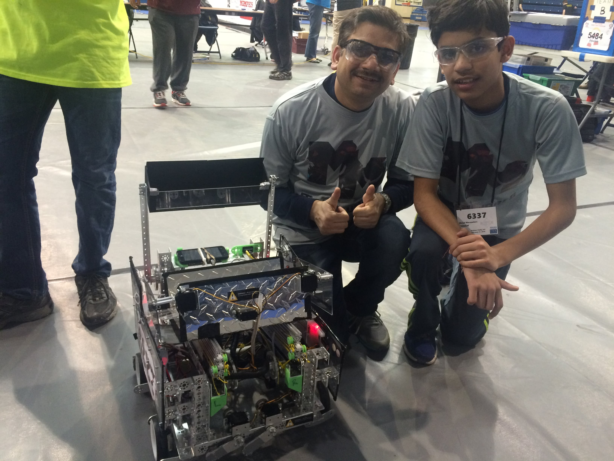
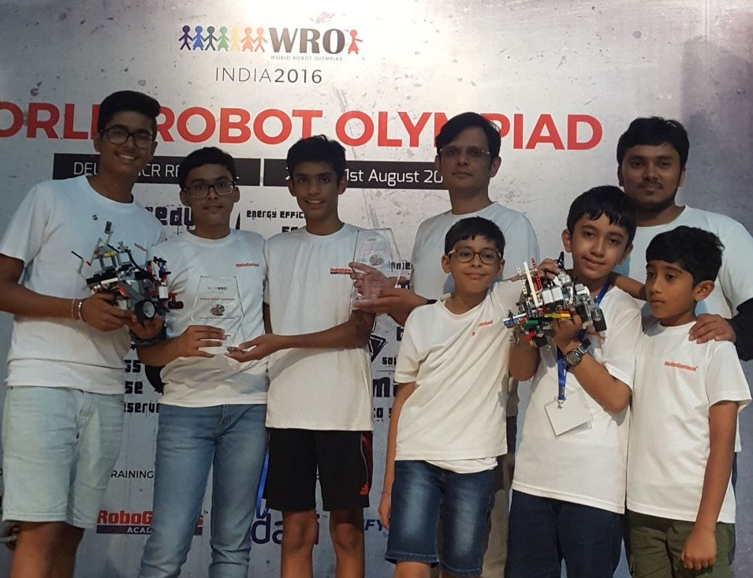
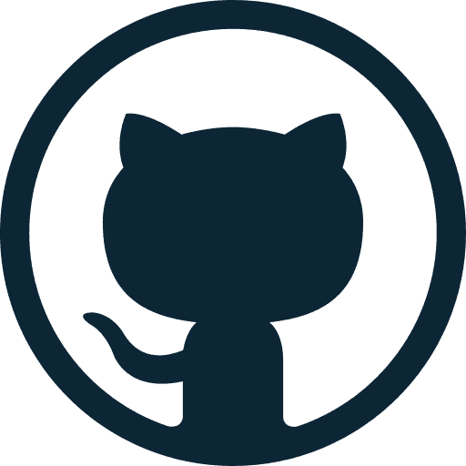
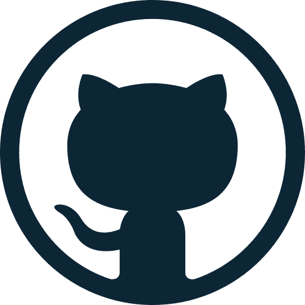

Hi there!
I'm Jainil Ajmera

ABOUT ME
I'm |
Hi there! My name is Jainil Ajmera, although I am more commonly known as 'Jaynius'. I am 14 years old, and I currently study at Delhi Public School, Gurgaon. I was born on November 21, 2001 in Andheri, a bustling suburb of Mumbai. I enjoy tackling challenging problems (especially the nerve-wracking ones that keep me thinking for a while) and have a diverse array of interests, including robotics, programming, web development, filmmaking and playing the guitar.
I have several awards (both national and international) to my credit. Some of the more prestigious of these include being ranked 18th internationally in the National Cyber Olympiad (which is now conducted in several countries across Asia) and being a part of a First Tech Challenge (FTC) team that bagged numerous awards, such as the Inspire Award and PTC Design Award, at regional events.
Being a member of the Metal Marauders, a private FTC team based in New Jersey, remains one of my most cherished experiences. By exposing me to the various aspects of robotics, FTC helped deepen my passion for the STEM field and turned me into a better problem-solver and innovator. In addition, the program helped me learn how to communicate my ideas better by providing me with the opportunity to present to businesses and become involved with the community. I am extremely thankful to the other, more experienced members of the team, who shared their knowledge with me and supported me throughout the season.
I continue to build on these experiences and am currently participating in the World Robot Olympiad as a member of team High Voltage. Our team has already qualified for the national championships, which will be held in Kolkata.

"Live as if you were to die tomorrow, learn as if you were to live forever."
~Mahatma Gandhi
PROJECTS
FTC 2015-16
FIRST Tech Challenge is a robotics competition designed for students in grades 7-12. Teams are responsible for designing, building, and programming their robots in a 10-week build period to compete in an alliance format against other teams. Teams are also required to make an 'Engineering Notebook' that documents their build season and experience.
Res-Q, the 2015-16 edition of the First Tech Challenge, challenged students to design and build robots capable of climbing ramps, depositing debris in designated areas and hanging, among other tasks.
Our robot featured a robust drivetrain, a 3D-printed bucket for efficient collection of debris, as well as a cascading slide system (with custom, 3D-printed pulleys) capable of extending to maximum length in less than 4 seconds.
Role: Building
Awards:
- Inspire Award: Hudson Valley Qualifiers
- PTC Design Award: New Jersey State Championships
- Control Award: New York State Championships
- Finalist Alliance, 2nd pick: Vermont State Championships
WRO 2016-17
World Robot Olympiad (WRO) is a robotics competition that brings together students from all over the globe to develop their creativity, design and problem-solving skills.
This year's challenge revolves around a particularly relevant theme, waste management. Robots must autonomously navigate a field, select four pieces of recyclable waste (out of 8) based on a specific algorithm, and deposit these blocks in designated areas.
The challenge requires students to find out the right combination of speed and accuracy for optimal perfomance.
Role: Programming
Awards:
- Regional Championships: Champions
CONTACT ME:
 

Feel free to drop a mail anytime. I would suggest staying away from other forms of communication, such as carrier pigeons and psychic signals, as they seem to be less reliable.